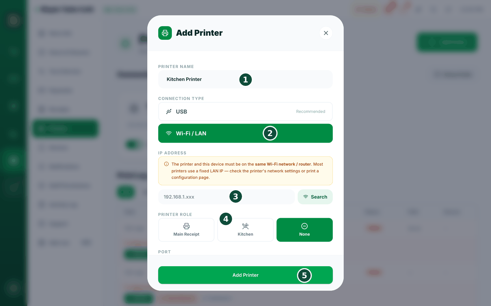
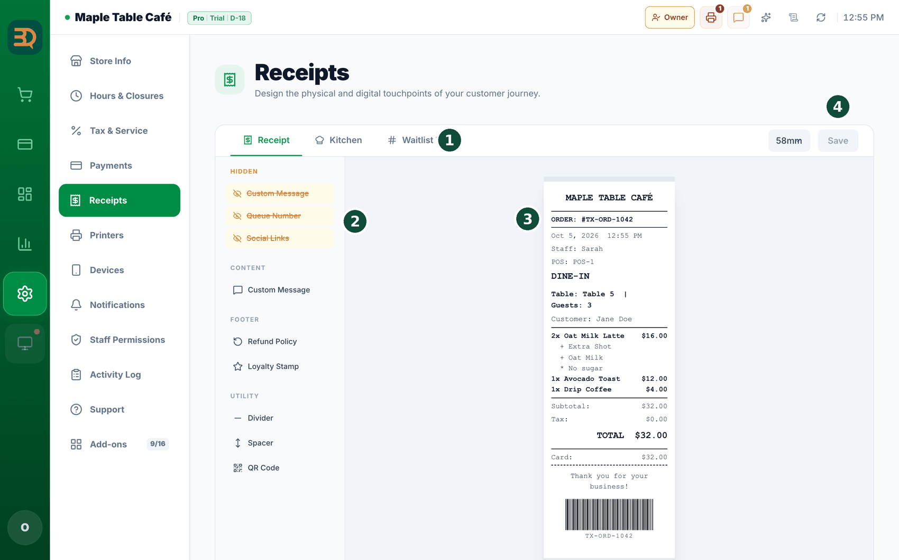

18영수증 & 프린터
BrewDesk는 손님용 영수증과 주방용 티켓을 인쇄할 수 있습니다. 프린터를 단계별로 추가하는 방법을 안내해 드립니다. 프린터에 문제가 생겨도 주문은 안전하게 보관됩니다.
Settings › Printers를 엽니다. "Connected Printers"와 "Add USB Printer", "Add Wi-Fi Printer", "Add Printer" 버튼이 표시됩니다.- "Add Wi-Fi Printer"(또는 "Add USB Printer")를 탭합니다. 프린터 창이 열립니다.
- "Printer Name"을 입력합니다. "Kitchen Printer"와 같은 이름으로 프린터를 구분합니다.
- "Connection Type"을 선택합니다 — USB 또는 Wi-Fi/LAN.
- Wi-Fi의 경우: 프린터의 "IP Address"(예: 192.168.1.50)와 "Port"(보통 9100)를 입력하고 "Connect"를 탭합니다. IP 일부만 알고 있다면 "Search"를 탭하여 찾습니다.
- USB의 경우: "설치된 프린터 선택"에서 "프린터 목록 불러오기"를 눌러 목록에서 프린터를 선택하면 완료됩니다. (BrewDesk 데스크탑 앱이 켜져 있어야 하며, 프린터가 OS에 설치되어 있어야 목록에 표시됩니다.)
- "Printer Role"을 선택합니다: "Main Receipt"(손님 영수증), "Kitchen"(주방 티켓), "None"(역할 없음).
- 주방 프린터라면 "Kitchen Print Mode"를 선택합니다: "Whole Order"(주문당 티켓 1장) 또는 "Per Item"(상품당 티켓 1장). 여러 장이 필요하면 "Print Copies"를 설정합니다.
- "Test Print"를 탭하여 테스트 페이지를 인쇄한 뒤 "Add Printer"를 탭해 저장합니다.
알아두기: 80mm 프린터의 기본 글자 수는 42자입니다. 대부분 이 설정으로 정상 출력되므로 인쇄에 문제가 없다면 이 부분은 변경하지 않으셔도 됩니다. 둘 다 맞지 않으면 "직접 입력"을 선택하고 영수증 맨 아래 눈금의 숫자(20~96)를 입력해 주세요.
가장 쉬운 방법입니다. 프린터의 드라이버를 평소처럼 설치하고(Mac은 보통 자동, Windows는 제조사 드라이버), BrewDesk 데스크탑 앱을 켠 다음, Settings › Printers › "Add USB Printer"에서 "설치된 프린터 선택" › "프린터 목록 불러오기"로 프린터를 선택하면 완료됩니다. Wi-Fi / LAN 프린터에는 이 과정이 필요하지 않습니다.


주문 & 대기 번호
카운터 서비스에서는 모든 주문에 번호가 부여됩니다. "A-005번 손님 나오십시오!"와 같이 호출하기 편리하여 손님이 음료가 언제 준비되었는지 알 수 있습니다. 번호를 설정하고 영수증에 표시하는 방법을 안내합니다.
Settings › Tables를 열고 Counter Mode 옵션을 찾습니다.- 모든 주문에 번호가 부여되도록 "Auto Order Number"를 켭니다.
- 필요하면 "Number Prefix"를 설정합니다 — 예를 들어 A-001.
- 매일 번호를 다시 시작하려면 "Daily Reset"을 켭니다. 아침마다 번호가 새로 시작됩니다.
- 번호가 주문 번호로 영수증에 인쇄됩니다 — 예를 들어 "ORDER: #TX-ORD-1042".
영수증 모양도 Settings › Receipts에서 직접 디자인할 수 있습니다. "Receipt", "Kitchen", "Waitlist" 탭이 있습니다. 블록을 끌어다 놓아 큰 "Queue Number", 맞춤 메시지, 환불 정책, 스탬프, QR 코드 등을 표시하거나 숨길 수 있습니다. 오른쪽 실시간 미리보기에서 인쇄될 모습을 그대로 확인할 수 있습니다.
